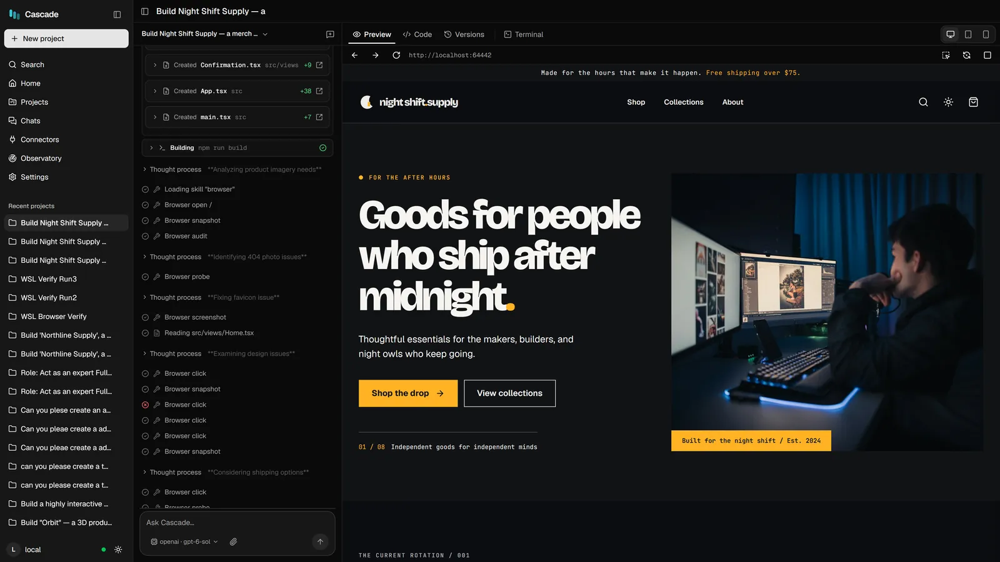
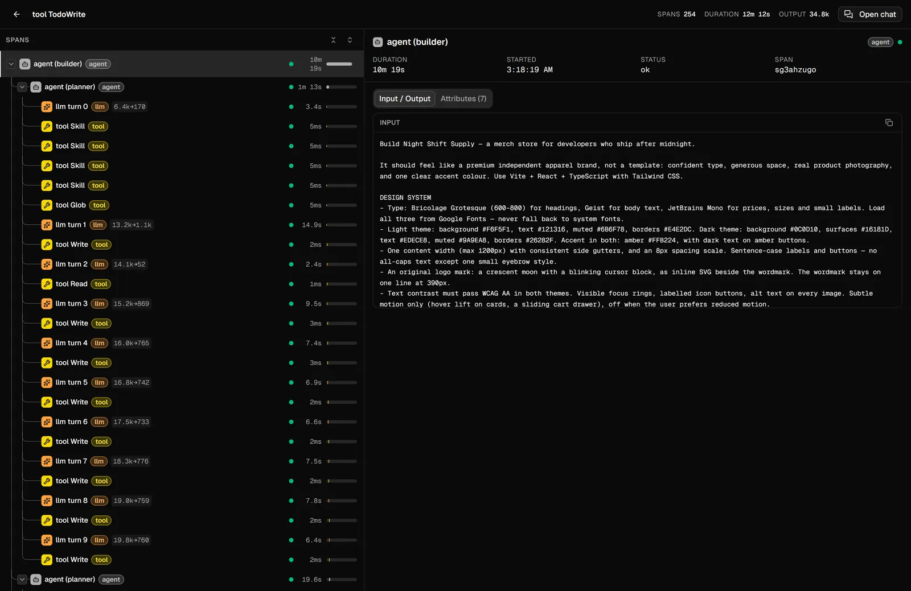
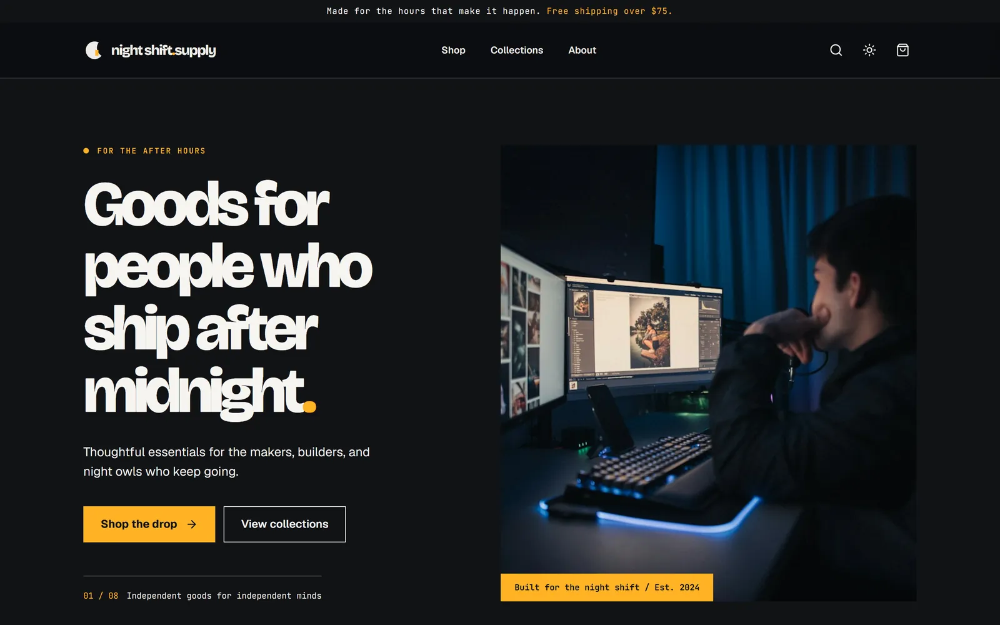
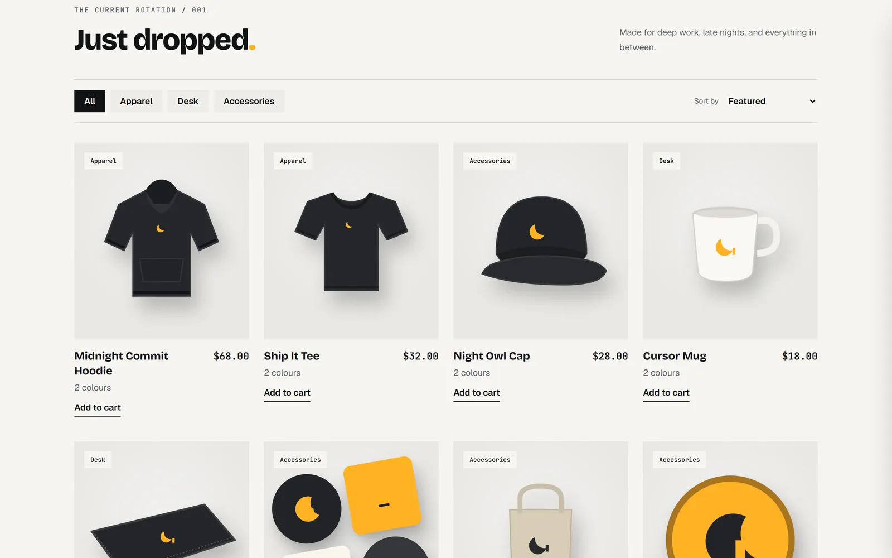
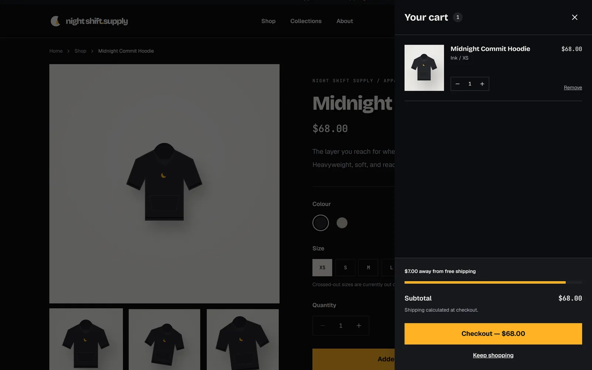
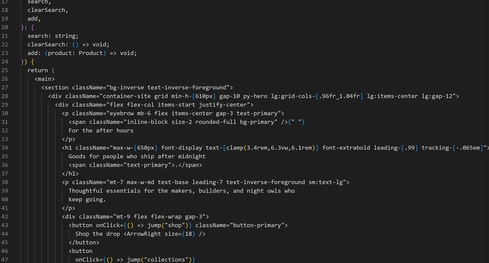

One prompt, one turn, a working store: inside a real Cascade build
We typed one prompt into Cascade and let it run. About twelve minutes later there was a working merch store — product pages, a cart, a checkout, light and dark mode — and a full record of how it got there. Here is that record.
The prompt
Cascade is an open-source AI app builder that runs on your machine. For this build we started from a blank project ("None — design from scratch", no template) and used GPT-6 Sol through our own API key, to show what the harness does with a strong model. The prompt opened like this:
Build Night Shift Supply — a merch store for developers who ship after midnight. It should feel like a premium independent apparel brand, not a template: confident type, generous space, real product photography, and one clear accent colour.
The rest of it — about 600 words — pinned what a designer would: a type system and palette for both themes, the page layout section by section, eight named products with prices, how the cart and checkout behave, rules for imagery, and a quality bar ("look right at 390px and 1440px, no console errors, finish by checking it in the browser"). A longer prompt is not a trick. It is the same brief you would give a person.
What the agent did
Cascade records every step of a turn, so this is not a reconstruction. In order:
- Planned. A planner wrote
PLAN.md: the goal, the four views (home, product, checkout, confirmation), the design decisions and the data model. - Loaded its playbooks for design, commerce, landing pages and app architecture.
- Wrote the app in batches — theme and global styles, then the product data and the logo, then the header, cards and catalog, then the product gallery, cart drawer, checkout and confirmation.
- Built it. The first
npm run buildfailed; it read the error, fixed it, and built again. Later builds passed. - Checked its own work in a browser. It opened its own product and checkout pages, audited them, and handed the running store to a smoke-test subagent.
- Closed its plan — all three tasks done.

| The run, by the numbers (from the trace) | |
|---|---|
| Prompts from us | 1 — one agent turn, start to finish |
| Recorded steps (model calls and tool calls) | 254 |
| Wall-clock time | 12 min 12 s |
| Tokens the model wrote | 34.8k |
| Plan tasks closed | 3 of 3 |


What it built
A store you can actually use: eight products with filters and sorting, product pages with a gallery, colour swatches and sizes (some out of stock), a cart drawer that remembers what you added and shows how far you are from free shipping, and a one-page checkout with validation and an order confirmation. It has a light and a dark theme, and it holds up on a phone.



Its own final report was candid: it said the build passed and the main flows worked in the browser, and that it had not run the 390-pixel phone check itself. We ran that afterwards — no sideways scrolling at phone width, in either theme.
What it took to get here
This was the fourth run of this prompt, and each earlier run taught us something about Cascade, not about the model:
- Run 1 hit a Cascade bug: the model was given an 8K context window instead of its real one, so it spent the turn compacting its own memory. Fixed in the model registry.
- Run 2 looked good but could not check itself — the live preview lost a race with the sandbox starting up — and it packed whole components onto single lines. Both fixed: the preview now waits for the server properly, and Cascade formats the code the agent wrote when each turn ends.
- Run 3 was nearly there, but some product photos showed other companies' logos. The fix was in the prompt: a stricter imagery section, with drawn mockups as the fallback.

That is the part we care about most. A build that fails is a bug report. Each of these is now a regression test, and the next person's first run gets the fixed version.
Build something with it
Cascade is free and MIT licensed. It runs on your own machine with local models through Ollama, or with your own API key.
Also on the blog: Small local models fail the same way in every harness.